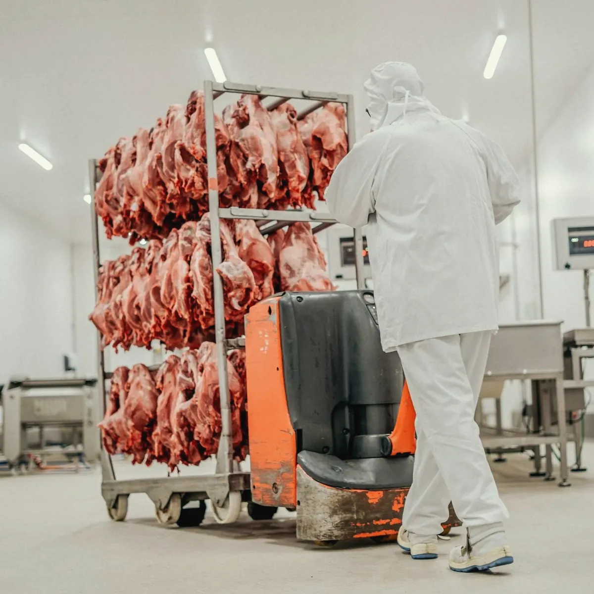

Escorxadors de baixa capacitat

Els escorxadors de baixa capacitat són equipaments essencials per garantir el sacrifici de proximitat, especialment en territoris rurals i de muntanya, i per assegurar la viabilitat de les explotacions ramaderes de petita i mitjana dimensió.
Redueixen el temps de transport del bestiar, contribueixen al benestar animal i permeten valoritzar la producció local en circuits curts de comercialització.
Tipologies
La guia de bones pràctiques d'higiene per a petits escorxadors, en elaboració, distingeix tres tipus d'instal·lacions:
- Petits escorxadors fixos i modulars
- Escorxadors mòbils
- Escorxadors situats en explotacions ramaderes
Estructura de suport
El Departament treballa en una estructura de suport als escorxadors de baixa capacitat per donar resposta a les principals dificultats identificades pel sector.
Classificació i retirada dels subproductes animals no destinats a consum humà (SANDACH) i dels residus.
Acompanyament tècnic i normatiu adaptat a la petita escala.
Resposta a la manca de personal qualificat en sacrifici i feinejat.
En elaboració
Guia de bones pràctiques d'higiene per a petits escorxadors, escorxadors mòbils i escorxadors d'explotació
Guia per facilitar la implantació de sistemes d'autocontrol basats en l'Anàlisi de Perills i Punts de Control Crítics (APPCC), adaptats a la dimensió dels petits operadors i amb els criteris de flexibilitat que preveu la normativa europea. S'aplica al sacrifici d'ungulats: oví i cabrum, porcí, boví i equí.
Procediment d'adhesió
- Compromís d'acollimentLa persona responsable de l'escorxador signa el compromís i hi indica les espècies que sacrifica.
- ImplantacióL'escorxador aplica el programa de prerequisits i el sistema APPCC i en conserva els registres.
Programa de prerequisits
Properament.
Temperatures de referència
La guia incorpora també un pla de benestar animal, amb la formació inicial a càrrec dels serveis veterinaris oficials, i un pla de control analític que permet acollir-se a la reducció de freqüències de mostratge.
Guia de bones pràctiques d'higiene per a petits escorxadors
Es publicarà un cop aprovada
Ajuts
Ajuts per a petits escorxadors i establiments de manipulació de caça
d'ajut concedit en el marc del PEAC (línia 2.2)
Actuacions subvencionables
Inversions en instal·lacions i maquinària, estudis de viabilitat, assessorament tècnic i dinamització.
Resultats de l'avaluació 2025-2026
- Cinc de cada set projectes avaluats ja disposen d'una infraestructura nova o millorada en funcionament.
- Més de la meitat assenyalen un millor accés territorial al servei de sacrifici.
- Es registren millores en traçabilitat, qualitat, seguretat alimentària i benestar animal.
El Departament prepara unes noves bases reguladores. La propera convocatòria es publicarà en aquest espai.
Preguntes freqüents
Dubtes habituals sobre els escorxadors de baixa capacitat
Apartat en preparació: les respostes es publicaran properament.
- Què és un escorxador de baixa capacitat?
- Què és la guia de bones pràctiques d'higiene per a petits escorxadors?
- Quines temperatures de referència fixa la guia?
- Cada quan s'ha de formar el personal de l'escorxador?
- Quins ajuts hi ha per a petits escorxadors?